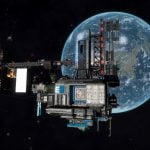
11 Parsecs Bar - 11 Parsecs is a bar that may be found in orbit of HIP 110028 6. Two Satellites giving Engineer Data are adjacent to the facility. Contains a Navigation Beacon. The number and type of ships around the area is typical for the system’s primary Navigation Beacon. The bar was constructed by The Winged Hussars with...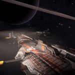
Airsetanoa Military Installation - A Federation capital ship dock facility is in orbit above the independent planet Airsetanoa 2. It contains one or more Farragut-class Battlecruisers, showing signs of battle damage, undergoing repairs. The ships are not broadcasting a transponder signal, and do not carry any identifying hull markings, so cannot be identified. Not of any known scientific interest.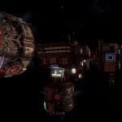
Alpha Centauri Civilian Installation - A Civilian Installation can be found in orbit of Alpha Centauri B 1. Two Satellites giving Engineer Data are adjacent to the facility. Not of any known scientific interest.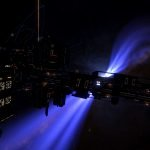
Amadioha Scientific Installation - A Scientific Installation may be found in orbit of the White Dwarf star Amadioha A. Contains a Navigation Beacon. The number and type of ships around the area is typical for the system’s primary Navigation Beacon. Two Satellites giving Engineer Data are adjacent to the facility.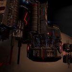
Atins Scientific Installation - A Scientific Installation can be found in orbit of Atins 1. Contains a Navigation Beacon. The number and type of ships around the area is typical for the systems primary Navigation Beacon. Three Satellites giving Engineer Data are adjacent to the facility, and a number of Engineer Materials are scattered in a debris field around one... Background Lore Index - In the galaxy of Elite Dangerous there are the Galnet News posts that give us insight into the world around us. In addition to the main story played out in front of us via those articles, Elite Dangerous has a rich background story that pilots can stumble across through various methods including trilateration through listening...
Background Lore Index - In the galaxy of Elite Dangerous there are the Galnet News posts that give us insight into the world around us. In addition to the main story played out in front of us via those articles, Elite Dangerous has a rich background story that pilots can stumble across through various methods including trilateration through listening... BD+22 3878 Tourist Installation - Tranquility’s Stop maintains a tourist installation in orbit of BD+22 3878 5, a water world within the Dumbbell Nebula. Contains a Navigation Beacon, which will give you the data for the local system, and a number of tourist ships. Two Satellites giving Engineer Data are adjacent to the facility. Not of any known scientific interest.
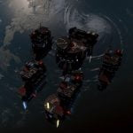
Belu Comms Installation - A Comms Installation can be found in orbit of Belu A 1. Contains two Satellites giving Engineer Data. Not of any known scientific interest.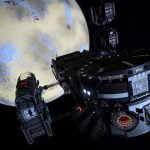
Communication Hub Zeta 12 - Communication Hub Zeta 12 is an installation that can be found in the Electra system, orbiting body 4.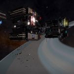
Dain Unauthorised Installation - An Unauthorised Installation can be found in orbit of Dain A 1. Contains a Navigation Beacon. The number and type of ships around the area is typical for the system’s primary Navigation Beacon. Two Satellites giving Engineer Data are adjacent to the facility, and a number of Engineer Materials are scattered in a debris field around... Eagle Eye Installations - Eagle Eye is a series of installations were installed in the Pleiades to monitor Thargoid Activity.
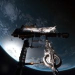
Facece Military Installation - A dual capital ship dock facility is in orbit above the planet Topaz in the Facece system. Both contain Majestic-class Interdictors undergoing repairs, with both show signs of battle damage. Neither ship is broadcasting a transponder signal, or carries any identifying hull markings, so they cannot be individually identified. Three Satellites are in the immediate area, giving... Gefjun’s Claim - Gefjun’s Claim is a large Agricultural Installation in Synuefai LX-R d5-28 around planet 4. It was places as a result of a Community Goal announced in Galnet on 10 NOV 3303 placed by the Spinward Marches Alliance Concern player faction (along with several other bases in the same system). It’s striking characteristic is its two...
Grabrigpa Agricultural Installation - A large Agricultural Installation can be found in orbit of Grabrigpa 2. Contains a Navigation Beacon. The number and type of ships around the area is typical for the system’s primary Navigation Beacon. Two Satellites giving Engineer Data are adjacent to the facility. Not of any known scientific interest.
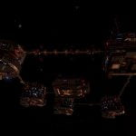
Gridge Military Installation - No explanation is given as to why the Federation have a Military Installation in orbit of Gridge 1, in an Empire-controlled system. The installation has an exclusion zone at 3.6km from the center of the signal source, entering it will result in your ship being fired upon. Two Satellites giving Engineer Data are adjacent to the...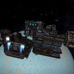
Groombridge 34 Scientific Installation - A Scientific Installation may be found in orbit of Groombridge 34 A 4. Contains a Navigation Beacon. The number and type of ships around the area is typical for the system’s primary Navigation Beacon. Two Satellites giving Engineer Data are adjacent to the facility, Not of any known scientific interest.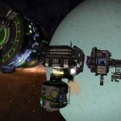
Halley Terminal - Halley Terminal is an Installation in the Ross 690 system, orbiting body 1. The existence of this installation is revealed by the listening post found in orbit of the planet Quy in the Quiness system: …LISTENING POST SIGNAL DATA…***Unauthorised Signal Detected*** Matching Signals Detected: Ross 690 +++Attention Bounty Hunters+++ A host of lucrative bounties available... HR 6164 Tourist Installation - Tranquility’s Stop maintains a tourist installation 0.61Ls away from the Neutron Star HR 6164 C. Contains a Navigation Beacon, which will give you the data for the local system, and a number of tourist ships. Two Satellites giving Engineer Data are adjacent to the facility. Not of any known scientific interest.
Inti Government Installation - A Government Installation can be found in orbit of Inti A 6. Protest Bus ships can be found in the area. Two Satellites giving Engineer Data are adjacent to the facility. Not of any known scientific interest.
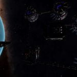
Isinor Unauthorised Installation - An Unauthorised Installation may be found in orbit of Maodun, in the Isinor system. Please note that as Isinor is Permit Locked, you will need to gain reputation with the The Chapter of Isinor and be offered a permit acquisition opportunity (which can occur at Malerba Orbital in Anotchadiae) before being able to visit. The installation...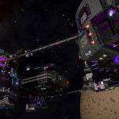
Istanu Unauthorised Installation - An Unauthorised Installation may be found in the Istanu system, in orbit of body 1 f. The start of the trail leading to this installation can be found in the Ross 154 Herald:(Note: this Herald is no longer available – Mar 3310) THE ROSS 154 HERALD:26 Sep 3303 Galactic News: Security Officer Killed in Line... Izanagi Military Installation - A Military Installation can be found in orbit of Izanagi A 1. Contains a Satellite giving Engineer Data, scannable from a distance. Facility has an exclusion zone use caution. Engineering materials can be found within the exclusion zone. Not of any known scientific interest.
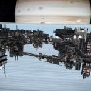
Janus Corp. Medical Research Centre - Janus Corp. Medical Research Centre is an installation in the HIP 106288 system, just above the rings of body 3 – it can only be approached from one side, so use caution on approach. A number of science ships are in the area. Four Ship Log Uplink points can be located along the structure. Deploy... Kappa Fornacis Agricultural Installation - An Agricultural Installation can be found in orbit of Panes, a planet in the Kappa Fornacis system. Contains a Navigation Beacon. The number and type of ships around the area is typical for the system’s primary Navigation Beacon. Three Satellites giving Engineer Data are adjacent to the facility. Not of any known scientific interest.
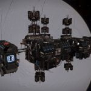
Karis Unnamed Installation - An unnamed installation (with a blank name in the navigation panel) may be found in orbit of Karis AB 2. The existence of this installation was revealed by the listening post found in orbit of the planet Quy in the Quiness system that actually lead to Halley Terminal, but incorrectly named the Karis system. Two...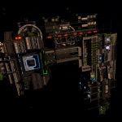
Keast & Crighton Comestibles - Agricultural Vessel orbiting Pleiades Sector GW-W c1-15 8 which appears to have been added as a result of a Community Goal for Angeli Imperial Enterprises on 15 DEC 3303. Main feature is two sets of biodomes with lighting rigs. Two satellites and a Navigation Beacon are in the area.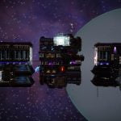
Kojeara Unauthorised Installation - An Unauthorised Installation may be found in orbit of Kojeara 4 a. Two Satellites giving Engineer Data are adjacent to the facility, and a number of Engineer Materials are scattered in a debris field around one of them. A number of ships are in the area. Not of any known scientific interest.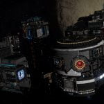
Kuntae Comms Installation - A Comms Installation can be found in orbit of Kuntae A 3. Contains two Satellites giving Engineer Data. Not of any known scientific interest. (Image from CMDR Kaz Archer)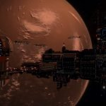
Lakshu Industrial Installation - An Industrial Installation can found in orbit of Lakshu A 1. Contains a Navigation Beacon. The number and type of ships around the area is typical for the system’s primary Navigation Beacon. Two Satellites giving Engineer Data are adjacent to the facility. Not of any known scientific interest.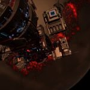
LFT 1748 Scientific Installation - A Scientific Installation is in orbit of LFT 1748 A 2. Contains a Navigation Beacon. The number and type of ships around the area is typical for the system’s primary Navigation Beacon. Two Satellites giving Engineer Data are adjacent to the facility. Not of any known scientific interest.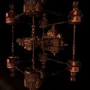
LFT 926 Military Installation - A Military Installation can be found in orbit of LFT 926 A. Maintain your distance from the structure, a large number of Federal Navy Ships are in the area and will shoot on sight if you enter the exclusion zone around the structure. Contains two Satellites giving Engineer Data, they are scannable from outside the exclusion...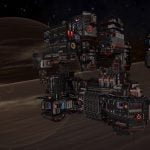
Lidpar Scientific Installation - Not of any known scientific interest. A Scientific Installation can be found in orbit of Lidpar A 2, installation is close enough to the rings of the planet that it may be approached from either side. Contains a Navigation Beacon. The number and type of ships around the area is typical for the systems primary Navigation Beacon....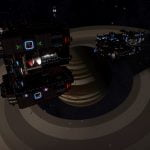
Moyot Scientific Installation - A Scientific Installation can be found in orbit of Moyot 7. Contains a Navigation Beacon. The number and type of ships around the area is typical for the systems primary Navigation Beacon. Two Satellites giving Engineer Data are adjacent to the facility. Not of any known scientific interest. Nevermore Civilian Installation - A Civilian Installation can be found in orbit of Nevermore A 1. Contains a Navigation Beacon. The number and type of ships around the area is typical for the systems primary Navigation Beacon. Contains three Satellites giving Engineer Data. Not of any known scientific interest.
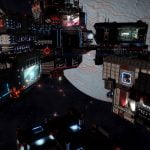
Ngalkin Civilian Installation - A Civilian Installation can be found in orbit of Ngalkin A 1 c. Contains a Navigation Beacon. The number and type of ships around the area is typical for the systems primary Navigation Beacon. Three Satellites giving Engineer Data are adjacent to the facility, and a number of Engineer Materials are scattered in a debris field...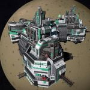
Panacea Medical Centre - A Medical Installation named Panacea Medical Centre can be found in orbit of HIP 17519 A 1 a. Use caution when dropping out of supercruise, you will often immediately collide with the structure. Full shields are recommended. A number of Emergency Aid Unit and Emergency Medical Unit ships can be found in the area. Two...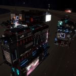
Rahu Unauthorised Installation - An Unauthorised Installation could be found slightly above the rings of Rahu 1, however has not been located since Apr 3303. The installation was best to approach the planet from its orbital planet to determine which side of the ring the installation was on; it was not possible to supercruise through the rings to it. Not...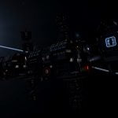
Relay Station PSJ-17 - An installation may be found in the Celaeno system orbiting body 1, designated as a Relay Station, it was first discovered by Canonn’s Head of Archaeology & Technology Mykl Atrum. Use extreme caution when visiting the facility as a large number of Elite ships with unusual designations such as SVI-075C are present, and will attack. Since... San Tu Scientific Installation - A Scientific Installation can be found in the San Tu system, orbiting body 4 c.
Shrogea MH-V e2-1763 Tourist Installation - Tranquility’s Stop maintains a tourist installation in orbit of the black hole within a planetary nebula found in Shrogea MH-V e2-1763, adjacent to the Black and Green Tourist Beacon. Contains a Navigation Beacon, which will give you the data for the local system, and a number of tourist ships. Two Satellites giving Engineer Data are...
Slough Unauthorised Installation - An Unauthorised Installation may be found in the Vesper-M4 system, in orbit of Slough (body 7). The start of the trail leading to this installation can be found in the Altair Herald:(Note: this Herald is no longer available – Mar 3310) THE ALTAIR HERALD:26 Sep 3303 Galactic News: Miners Missing The Hull mining corporation is...
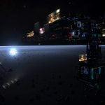
Squirrel’s Nest Bar - Squirrel’s Nest Bar is an installation within the rings of Pleione 4. WELCOME Welcome to the Squirrel’s Nest bar. You don’t have to be nuts to work here but it helps. Some sixteen (by this commander’s count, the drinks here are good, there may be more) Ship Log Uplink points can be located along, and...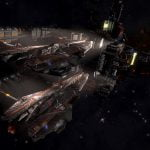
The Drive Yards - Dan Gurney Drive Yards is a capital ship dock facility adjacent to the Bella Port station in the Irusan system. It consists of a large structure and two capital ship bays. Both contain Farragut-class Battlecruisers undergoing repairs, with both show signs of battle damage. Neither ship is broadcasting a transponder signal, or carries any identifying hull... Thrutis Civilian Installation - A large station with a renowned bar is in orbit of the planet Thrutis A 2. Contains a Navigation Beacon. The number and type of ships around the area is typical for the system’s primary Navigation Beacon. Two Satellites giving Engineer Data are adjacent to the facility. Not of any known scientific interest.
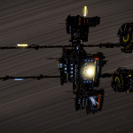
Warkan Comms Installation - Comms Installation found in orbit of Warkan 1. Lots of flight traffic around, will often scan you for cargo. Two satellites and a Navigation Beacon present – satellites will give data if scanned. Installation is to one side of the planet’s rings, not in the centre, so can only be approached from one side without...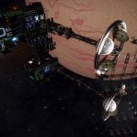
WISE 0855-0714 Agricultural Installation - An Agricultural Installation may be found in orbit of WISE 0855-0714 5 a. Not of any known scientific interest.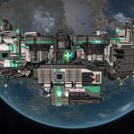
Zelano Medical Installation - A medical and hospital facility is in orbit of the Earth Like World Zelano A 4. Contains a Navigation Beacon. The number and type of ships around the area is typical for the system’s primary Navigation Beacon, as well as including Emergency Aid Unit and Emergency Medical Unit ships. Three Satellites giving Engineer Data are...